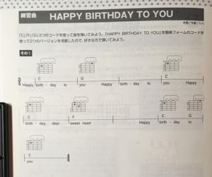
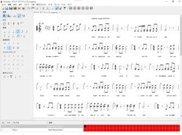
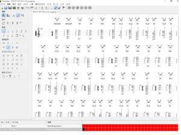

うるがいの話 ある日
最新: TuxGuitar
うるがいとは 前提知識です
カニの画像をクリックすると『うるがいの話』サイトを表示します
うるがい(ｳﾙｶﾞｲ urugai)とは、『もずくがに』の名前でとても大きくなります。
たながー（ﾀﾅｶﾞｰtanagaa）とは手長えびのことで、何種類かあり大きいのは車 エビぐらいになります。
ぶながー(bunagaa)とは、赤い髪の毛、赤い身体、そして身長は１ｍ２０ｃｍ ぐらい、川の蟹を食べているの目撃された。場所は沖縄県国頭郡大宜味村のと ある村僕の隣近所に住んでいる爺さんから、聞いた話です。
2021年08月01日 (日）
TuxGuitar
09:31



図書館から借りた本で、名前のとおり一番簡単な『挫折しないギター入門』を
読む。ま、レベル的には越えているので、でも、せっかくなのでチョット実践
してみるか。ところでギターの弾き方には、私が初めてギターを習ったコード
での弾き方と、禁じられた遊びのメロディを弾く２種類があるみたい。どちら
が簡単かと言えば、コード弾きだと思う。ただ、メロディが無いので（歌えば
いいのだが）弾いていただけでは面白くない。で、ユーチューブでメロディを
捜し一緒に演奏する。『挫折しないギター入門』の最初の練習曲、「HAPPY
BIRTHDAY」に挑む。でで、ユーチューブでメロディの曲を捜していると『挫
折しそう』なサイトがあった。
『７通りで演奏する』
、ま、いつかは。『挫折
しないギター入門』の本は、誰かが予約していたので昨日、速やかに返却する。
練習にはユーチューブの動画がいいが、演奏スピードなど練習するには・・・
次に弾き語り＆バンドに最適化！ 60’sを中心に、オールディーズの名曲を
厳選！をチャッチコピーの『ロック＆ポップススタンダード・バイブル』の演
奏ＣＤ付きの本を読む。ＣＤにはサンプルが１０曲、弾けそうなコードを調べ
とサイモン・アンド・ガーファンクルの『サウンドオブサイレンス』が、２フ
レットにカポを前提になんと５つ！（本は簡単なコードで印刷されている、こ
れがあとで大変な事に）。で、ＣＤを演奏して本のコードを弾いてみる、ん！
全然合わない。ま、せっかくなので本の楽譜をデータ化（テキスト音楽「サク
ラ」は楽譜での表示はない）をしたいとネットを調べると、無料のTuxGuitar
を見つける。登録してみた、なんと１週間かかり、昨日一応終える（品質７０
％ぐらいかな、一緒にギターを演奏するには全然支障はない）。
TuxGuitarは演奏速度テンポを変更したり、カウントダウンメトロノームなど
の機能がある、おおおおお！。苦労して作成した楽譜は、８２小節、演奏時間
は３分１１秒、メロディを１トラック目、コードは２トラックに適当に登録し
た。せっかくなので、ウェブアップギリギリのサイズの演奏動画２５秒を載せ
る。最初はメロディのトラックで途中からコードのトラックである。
TuxGuitarの初版演奏動画２５秒 適当に操作すること
動画を再生するには、videoタグをサポートしたブラウザが必要です。
演奏して、本に載っていたカポ後のコードは間違っていた！ことが分かった。
一応、カポを付けてコードでは弾けそうである。